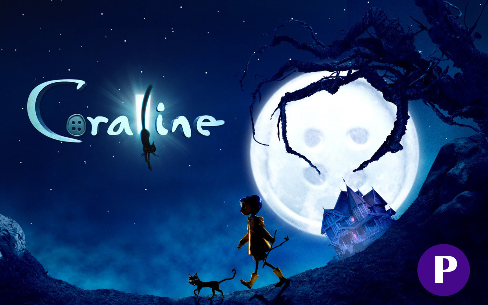
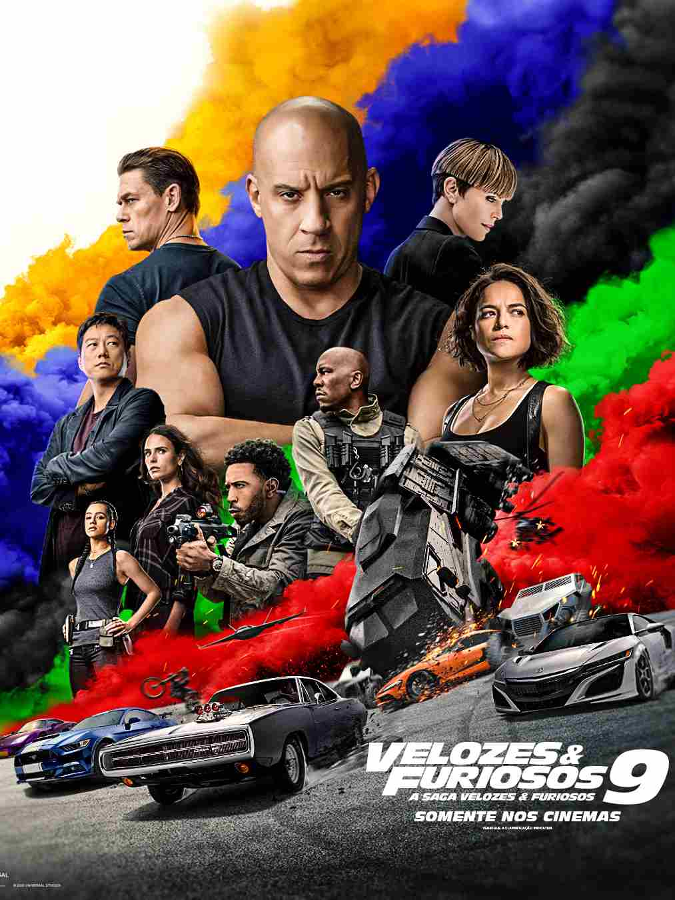

Enquanto explora sua nova casa à noite, a pequena Coraline descobre uma porta secreta que contém um mundo parecido com o dela, porém melhor em muitas maneiras. Todos têm botões no lugar dos olhos, os pais são carinhosos e os sonhos de Coraline viram realidade por lá. Ela se encanta com essa descoberta, mas logo percebe que segredos estranhos estão em ação: uma outra mãe e o resto de sua família tentam mantê-la eternamente nesse mundo paralelo.
Data de lançamento: 13 de fevereiro de 2009 (Brasil)
Diretor: Henry Selick
ASSISTA O TRAILER

Dominic Toretto e Letty vivem uma vida pacata ao lado do filho. Mas eles logo são ameaçados pelo passado de Dom: seu irmão desaparecido Jakob, que retorna e está trabalhando ao lado de Cipher. Cabe a Dom reunir a equipe novamente para enfrentá-los.
Diretor: Justin
ASSISTA O TRAILER